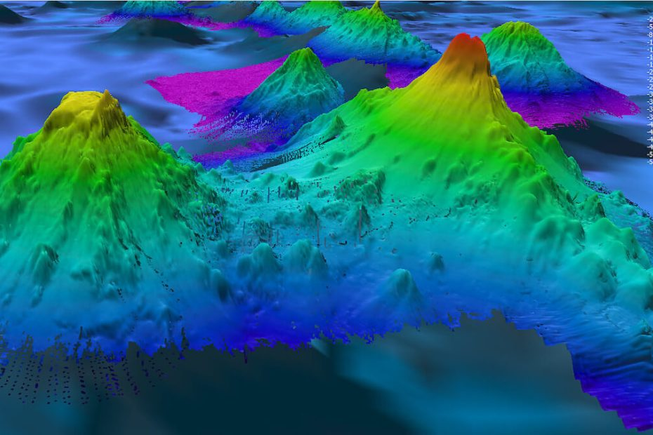

ကမ္ဘာပတ် လမ်းကြောင်းထဲက ဂြိုဟ်တုမှာ တပ်ဆင်ထားတဲ့ အနုစိတ် HD ရေဒါကို အသုံးပြုပြီး သမုဒ္ဒရာ ရေအောက် ကြမ်းပြင်က မီးတောင် ၁၉,၀၀၀ ကျော်ကို ရှာဖွေ တွေ့ရှိထားတယ်လို့ သိပ္ပံ ပညာရှင် တွေက ကြေငြာ လိုက်ပါတယ်။
ယခု တွေ့ရှိချက်ကို ဧပြီလ ၆ ရက်နေ့ထုတ် Earth and Space Science သုတေသန စာစောင်မှာ တင်ပြ ထားတာ ဖြစ်ပါတယ်။ အခုလို ရှာဖွေ တွေ့ရှိမှုကြောင့် ပင်လယ် သမုဒ္ဒရာ ကြမ်းပြင်က မြေမျက်နှာပြင်ကို ပိုမို အနုစိတ် သိမြင် လာနိုင် ခဲ့ပါတယ်။
ဒီလို သိမြင်လာ မှုကြောင့် ပင်လယ်ရေအောက် က သမုဒ္ဒရာ ရေစီးကြောင်းတွေ၊ tectonic plate တွေနဲ့ ကမ္ဘာ့ ရာသီဥတု ပြောင်းလဲမှုတွေ အကြောင်း လေ့လာရာမှာ အထူးပဲ အထောက်အကူ ဖြစ်စေမယ်လို့ ဆိုပါတယ်။
အခု ရှာဖွေ တွေ့ရှိမှု မတိုင်မီက ကမ္ဘာ့ သမုဒ္ဒရာ ကြမ်းပြင်ရဲ့ ၄ ပုံ ၁ ပုံလောက်ကိုပဲ ဆိုနာနဲ့ အသေးစိတ် စူးစမ်း မှတ်တမ်းတင် ထားနိုင်ခဲ့တာ ဖြစ်ပါတယ်။ ဆိုနာ ဆိုတာက အသံလှိုင်းကို အသုံးပြုပြီး ရေအောက်မှာ ထောက်လှမ်း ရှာဖွေ နိုင်တဲ့ ကိရိယာ တစ်မျိုး ဖြစ်ပါတယ်။
၂၀၁၁ ခုနှစ်က ပြုလုပ်ခဲ့တဲ့ ရေအောက် ဆိုနာနဲ့ စူးစမ်း မှတ်တမ်းတင် မှုမှာ ရေအောက်က တောင်ကုန်း တောင်ကမူပေါင်း ၂၄,၀၀၀ ကျော်ကို ရှာဖွေ မှတ်တမ်း တင်နိုင် ခဲ့ပါတယ်။ ဒါပေမယ့် ဆိုနာနဲ့ မှတ်တမ်း မတင်နိုင် သေးတဲ့ ရေအောက် တောင်ကုန်း တောင်ကမူပေါင် ၂၇,၀၀၀ ကျော် ကျန်ရှိ နေပါသေးတယ်။
အခု သုတေသနမှာ ပါဝင်တဲ့ marine geophysicist တစ်ဦးဖြစ်သူ ဒေးဗစ် စန်းဝဲလ် (David Sandwell) က အခု တွေ့ရှိမှုဟာ အထူး အံ့အားသင့်ဖွယ် ဖြစ်တယ်လို့ ဝန်ခံ ပြောကြားသွားခဲ့ပါတယ်။
ယခု သုတေသနရဲ့ ထူးခြားချက် ကတော့ ပင်လယ် သမုဒ္ဒရာ ကြမ်းပြင်မှာ စူးစမ်းလေ့လာမှု ပြုတဲ့ အခါမှာ အမြဲတစေ ဆိုနာ ကို အားကိုးနေစရာ မလိုဘူး ဆိုတာကို သက်သေ ပြနိုင်ခြင်းပဲ ဖြစ်ပါတယ်။
ရေဒါဂြိုဟ်တု တွေဟာ သမုဒ္ဒရာ မျက်နှာပြင်ကိုတင် မကပဲ ရေမျက်နှာပြင် အောက် ပင်လယ်ကြမ်းပြင် အထိ ရှာဖွေ ထောက်လှမ်းနိုင်တဲ့ အစွမ်း ရှိကြပါတယ်။ ရေဒါ ဂြိုဟ်တု တွေဟာ ဆိုနာကို အသုံးပြု တာထက် သမုဒ္ဒရာ ကြမ်းပြင်ကို ပိုပြီးတော့လဲ အဏုစိတ် တိုင်းတာ နိုင်စွမ်း ရှိကြပါတယ်။
ဥရောပ သမဂ္ဂက လွှတ်တင်ထားတဲ့ CryoSat-2 ဂြိုဟ်တုကို အသုံးပြုပြီး သုတေသီ တွေဟာ ပင်လယ် ကြမ်းပြင်က တောင်ကုန်း တောင်တန်း တွေကို အသေးစိတ် ရှာဖွေ လေ့လာ ခဲ့ကြပါတယ်။ ဒီ အခါ ဒီ ဂြိုဟ်တုရဲ့ ရေဒါကနေ ပင်လယ်အောက် တောင် အဖြစ် သတ်မှတ်ချက် ဖြစ်တဲ့ အမြင့် မီတာ ၁,၁၀၀ ထက်မြင့်တဲ့ တောင်အားလုံးကို ရှာဖွေ ပေးနိုင်တယ် ဆိုတာ တွေ့ရှိခဲ့ ကြပါတယ်။
ဒီ နည်းနဲ့ ရှာဖွေ ပေးနိုင်မယ့် ရေအောက် မီးတောင် တွေရဲ့ အသေးဆုံး အရွယ်အစားဟာ မီတာ ၃၇၀ အမြင့် ဖြစ်မယ်လို့ ပညာရှင် တွေက ခန့်မှန်း ပါတယ်။
အခုထက်ထိတော့ သုတေသီ တွေဟာ အတ္တလန်တိတ် သမုဒ္ဒရာ အရှေ့မြောက် ဒေသက ရေအောက် မီးတောင်တွေကို အသေးစိတ် ရှာဖွေ မှတ်တမ်း တင်နိုင် ခဲ့ပါတယ်။ ဒီ ရေအောက် မီးတောင်တွေဟာ အိုက်စ်လန် ကျွန်းပေါ်က မီးတောင်ရှင် ၁၀၀ ကျော် ဘယ်လို ဖြစ်ပေါ်လာခဲ့သလဲ ဆိုတာကို သိနားလည်ဖို့ အရေးပါတဲ့ သဲလွန်စတွေ ဖြစ်တယ်လို့ ပညာရှင်တွေက ဆိုပါတယ်။
နောက်ပြီး ဒီ ရေအောက်ကြမ်းပြင် မြေပုံကနေ တဆင့် သမုဒ္ဒရာ ကြမ်းပြင်ကနေ ရေမျက်နှာပြင်ကို ပြန်စီးနေတဲ့ ရေစီးကြောင်းတွေ ဖြစ်ပေါ်လာပုံကိုလဲ ရှာဖွေဖော်ထုတ် နိုင်မယ်လို့ ယုံကြည် ကြပါတယ်။ ဒီ သမုဒ္ဒရာ ကြမ်းပြင်က ရေစီးကြောင်း တွေဟာ ပင်လယ်ရေအောက်က တောင်ကုန်း တောင်တန်းတွေရဲ့ အနီးမှာ ဖြစ်ပေါ်လေ့ ရှိတယ်လို့ သိပ္ပံ ပညာရှင် တွေက ယုံကြည် ကြပါတယ်။
ရေအောက်ကြမ်းပြင်ကို အသေးစိတ် စူးစမ်း မှတ်တမ်းတင်နိုင် ခြင်းဟာ လူသားတွေ ပင်လယ် သုမုဒ္ဒရာကို အပြည့်အဝ နာလည်ဖို့ အရေးပါတဲ့ အချက်အလက်တွေ ပေးစွမ်းနိုင်မယ်လို့ ပညာရှင် တွေက မျှော်လင့် နေကြပါတယ်။
Ref: ‘Mind boggling’ array of 19,000 undersea volcanoes discovered with high-resolution radar satellites | Live Science
သမုဒ္ဒရာ ကြမ်းပြင်မှ မီးတောင် ၁၉,၀၀၀ ကျော် ရှာတွေ့

May 2, 2023
Other Posts
- အမြှီးပါသော ရှေးဟောင်း ပင့်ကူမျိုးစု မြန်မာပြည်တွင် ရှာဖွေတွေ့ရှိ
- ကမ္ဘာလည်တာ ရပ်သွားခဲ့ရင်
- နေအဖွဲ့အစည်း
- အာကာသ တွင်းနက်ကြီးတွေရဲ့ အလေးချိန်ကိုတိုင်းမယ့် နည်းလမ်းသစ်
- နေအတုလုပ်ဖို့ နီးစပ်ပြီလား
- အီဂျစ် မရဏကျမ်း ပုရပိုက် အပြည့်အစုံ ရှာဖွေတွေ့ရှိ
- Black hole နား ကြယ်တစင်း ကပ်သွားရင် ဘာဖြစ်မလဲ
- ဟယ်လီ ကော်ပတာ ဘယ်လို ပျံသလဲ
- James Webb တယ်လီစကုပ်ကြီးရဲ့ ကြည်လင်ပြတ်သားသော ပုံရိပ် နာဆာထုတ်ပြန်
- အလင်း ဖိုတွန်ကို ထက်ခြမ်းခြမ်းနိုင်မယ်